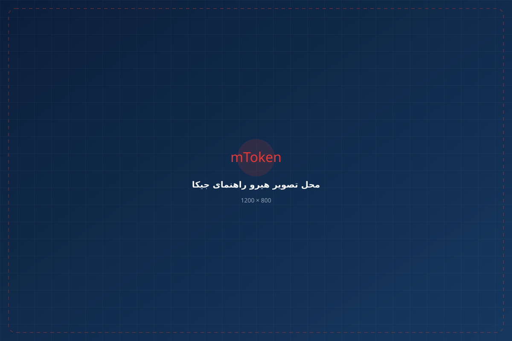
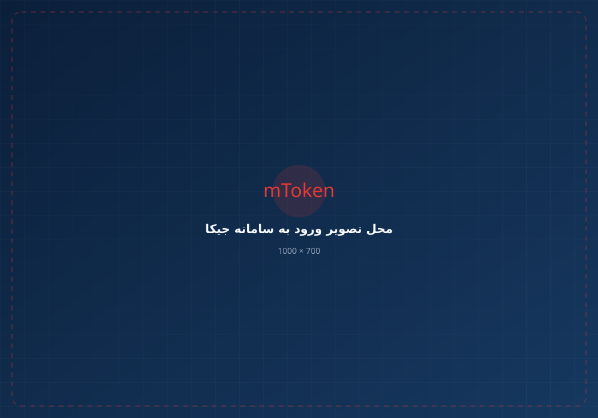
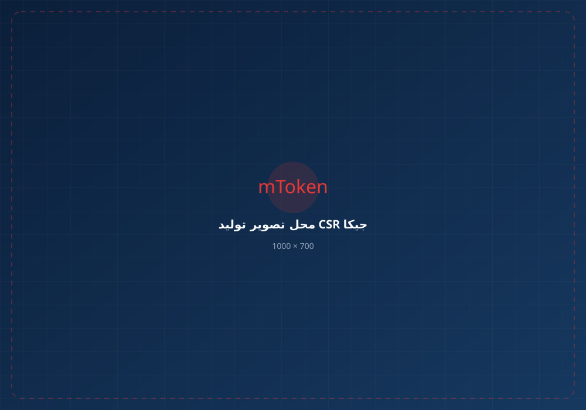

اگر برای دریافت گواهی امضای دیجیتال، ثبت CSR، پیگیری درخواست یا استفاده از گواهی در سامانههای مختلف به جیکا رسیدهاید، از اینجا مسیر مناسب خودتان را پیدا کنید.
ورود به سامانه جیکا ←
اگر فقط دنبال ورود به سامانه هستید، از اینجا مستقیماً به مسیر ورود بروید.
اگر هنوز گواهی امضای دیجیتال ندارید، مسیر دریافت گواهی را از اینجا دنبال کنید.
اگر برای نگهداری امن کلید خصوصی به توکن نیاز دارید، میتوانید mToken K3 را مستقیماً سفارش دهید.
سامانه جیکا یکی از بخشهای مهم فرایند دریافت و مدیریت گواهیهای الکترونیکی در ایران است. کاربران بسته به نوع گواهی و سامانهای که قصد استفاده از آن را دارند، ممکن است از جیکا برای ثبت درخواست، تکمیل اطلاعات، احراز هویت، درخواست گواهی، دریافت کد رهگیری و ادامه فرایند استفاده کنند.
اگر وارد جیکا شدهاید اما نمیدانید قدم بعدی چیست، ابتدا مشخص کنید گواهی میخواهید، CSR دارید، توکن میخواهید یا فقط قصد ورود و پیگیری درخواست قبلی را دارید.
برای ورود، از آدرس رسمی سامانه استفاده کنید و اطلاعات حساب خود را در اختیار سایتهای ناشناس قرار ندهید.
برای اطمینان از ورود به سامانه اصلی، از لینک رسمی زیر استفاده کنید.
ورود به سامانه رسمی ←
مسیر دریافت گواهی به نوع گواهی و روش درخواست بستگی دارد. اگر قصد دارید مراحل را خودتان انجام دهید، از مسیر زیر استفاده کنید.
اطلاعات موردنیاز خود را در فرایند درخواست وارد و مشخصات را با دقت بررسی کنید.
بسته به نوع گواهی، احراز هویت متقاضی بخشی از فرایند دریافت گواهی خواهد بود.
بر اساس نوع گواهی، مسیر مناسب درخواست را انتخاب کنید. روش توکن و CSR ممکن است متفاوت باشد.
پس از ثبت موفق درخواست، اطلاعات پیگیری درخواست خود را نزد خود نگه دارید.
در صورت نیاز به احراز هویت یا مراجعه، مراحل اعلامشده برای درخواست خود را انجام دهید.
اگر نمیخواهید مراحل درخواست، احراز هویت و پیگیری را خودتان انجام دهید، میتوانید از خدمات VIP استفاده کنید.
دریافت خدمات VIP ←CSR یا Certificate Signing Request، درخواست صدور گواهی است که اطلاعات لازم برای صدور گواهی و کلید عمومی در آن قرار میگیرد.

کد رهگیری را نزد خود نگه دارید و بر اساس وضعیت درخواست، مراحل بعدی مانند احراز هویت یا ادامه فرایند را انجام دهید.
CSR باید در مسیر مربوط به درخواست گواهی استفاده شود. قبل از ارسال، اطلاعات درخواست و مشخصات موجود در CSR را بررسی کنید.
نصب بودن گواهی، وجود کلید خصوصی، نرمافزار یا Middleware موردنیاز، مرورگر و تنظیمات سامانه مقصد را بررسی کنید.
خرید توکن به معنی صدور گواهی روی آن نیست. در ادامه باید فرایند دریافت گواهی موردنیاز خود را انجام دهید و سپس از توکن برای استفاده از کلید خصوصی و گواهی استفاده کنید.
ابتدا مشخص کنید دقیقاً برای کدام بخش از فرایند مالیاتی به گواهی یا CSR نیاز دارید. سپس بر اساس الزامات همان فرایند، مسیر گواهی و کلید عمومی را انتخاب کنید.
اگر برای نگهداری امن کلید خصوصی و استفاده از گواهی به یک توکن سختافزاری نیاز دارید، میتوانید توکن را جداگانه تهیه کنید.
خرید توکن به دریافت خدمات راهاندازی یا VIP وابسته نیست. اگر میخواهید مراحل دریافت گواهی را شخصاً انجام دهید، میتوانید فقط توکن موردنیاز خود را سفارش دهید.
کاربرد گواهی به نوع گواهی و الزامات سامانه مقصد بستگی دارد. چند نمونه از محیطهایی که کاربران با امضای دیجیتال و توکن سروکار دارند:
در برخی فرایندهای مرتبط با فعالیتهای تجاری و ثبت سفارش، استفاده از امضای دیجیتال موردنیاز است.
برای فعالیتهایی مانند شرکت در مناقصه و مزایده و امضای اسناد الکترونیکی.
در برخی فرایندهای مالیاتی، بسته به روش اجرا، گواهی و زیرساخت کلید عمومی مورد استفاده قرار میگیرد.
برخی خدمات سازمانی و تراکنشهای خاص بانکی ممکن است از گواهی یا امضای دیجیتال استفاده کنند.
در برخی فرایندهای مرتبط با حملونقل و صدور اسناد الکترونیکی، استفاده از توکن و امضای دیجیتال کاربرد دارد.
بسته به زیرساخت سامانه، گواهی دیجیتال میتواند برای احراز هویت یا امضای الکترونیکی استفاده شود.
قبل از اینکه چند بار مراحل را از اول انجام دهید، ابتدا نوع مشکل را مشخص کنید.
آدرس سامانه، روش ورود، اطلاعات کاربری و وضعیت حساب را بررسی کنید.
اطلاعات متقاضی، نوع درخواست و در صورت استفاده از CSR، صحت اطلاعات درخواست را بررسی کنید.
اتصال USB، نرمافزار یا Middleware موردنیاز، مرورگر و تنظیمات سامانه مقصد را بررسی کنید.
وجود گواهی معتبر، دسترسی به کلید خصوصی، PIN توکن و سازگاری نرمافزار با توکن را بررسی کنید.
اگر ترجیح میدهید مراحل دریافت، احراز هویت و پیگیری را خودتان انجام ندهید، خدمات VIP برای شماست.
جیکا (GICA) سامانه مرتبط با فرایندهای گواهیهای الکترونیکی است و کاربران بسته به نوع خدمت میتوانند برای ثبت درخواست و پیگیری فرایند دریافت گواهی از آن استفاده کنند.
برای ورود بهتر است از آدرس رسمی سامانه جیکا استفاده کنید: gica.ir
مسیر دریافت گواهی به نوع گواهی و روش درخواست بستگی دارد. جیکا یکی از سامانههای مهم در فرایند درخواست گواهیهای الکترونیکی است.
منظور معمولاً CSR مورد استفاده در فرایند درخواست گواهی از طریق جیکا است. CSR شامل کلید عمومی و اطلاعات درخواست گواهی است.
این موضوع به نوع گواهی و کاربرد آن بستگی دارد. در گواهیهایی که کلید خصوصی روی توکن سختافزاری نگهداری میشود، توکن بخش مهمی از فرایند استفاده از گواهی است.
ابتدا نصب بودن گواهی، وجود کلید خصوصی، نرمافزار یا Middleware موردنیاز، مرورگر و تنظیمات سامانه مقصد را بررسی کنید.
بله. اگر تجهیزات و اطلاعات لازم را دارید و با مراحل آشنا هستید، میتوانید فرایند را شخصاً انجام دهید. خدمات VIP برای افرادی است که ترجیح میدهند در انجام مراحل کمک دریافت کنند.
اگر فقط دنبال ورود هستید، وارد جیکا شوید. اگر گواهی میخواهید، مسیر دریافت گواهی را دنبال کنید. اگر توکن میخواهید، آن را مستقل تهیه کنید. و اگر وقت انجام مراحل را ندارید، میتوانید از خدمات VIP کمک بگیرید.
ورود به سامانه جیکا ←